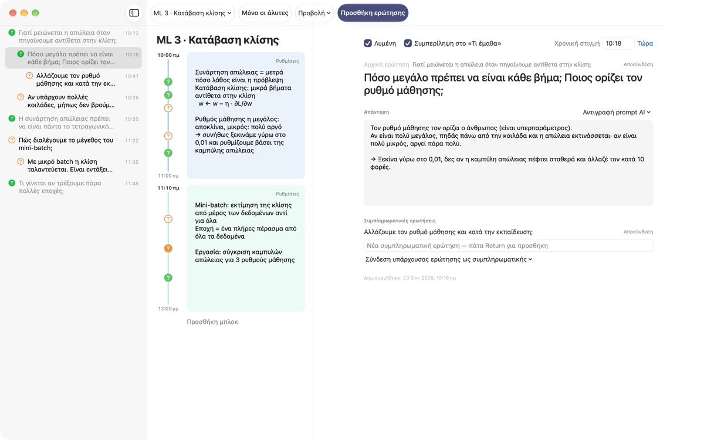
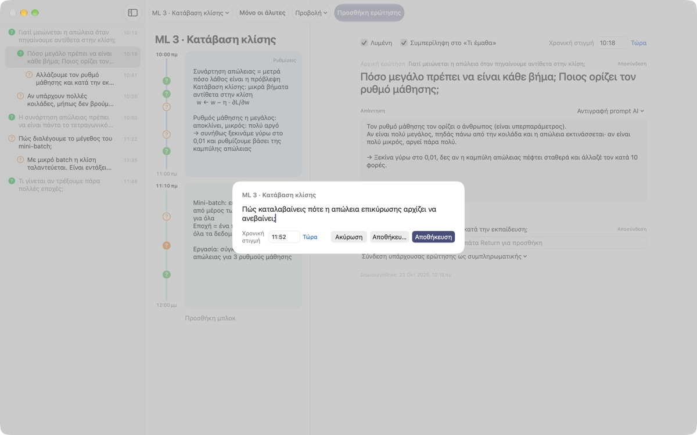
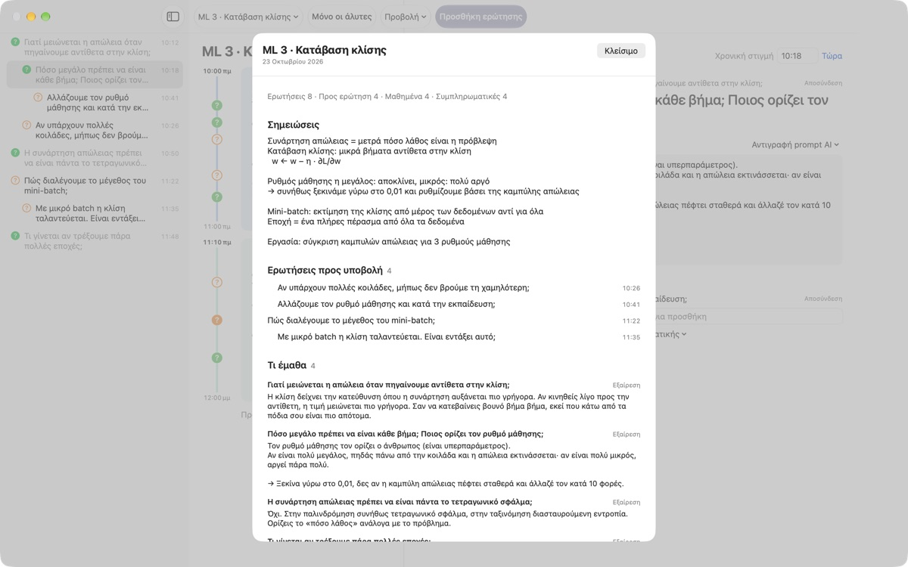
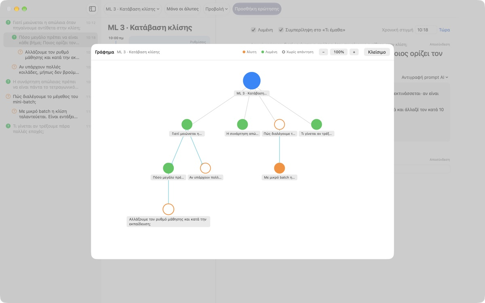

Καμία απορία του μαθήματος
δεν θα χάνεται πια
Πατήστε ⌘⇧N, γράψτε μία γραμμή, και η ερώτηση μπαίνει δίπλα στις σημειώσεις ακριβώς εκείνου του λεπτού. Συνεχίζετε να ακούτε και βρίσκετε την απάντηση αργότερα.
Για macOS 14 ή νεότερο. Χωρίς λογαριασμό, όλα μένουν σε αυτό το Mac.

Δοκιμάστε το εδώ
Βρίσκεστε στη μέση ενός μαθήματος μηχανικής μάθησης. Γράψτε μια ερώτηση και αποθηκεύστε τη: δίπλα στο μπλοκ εκείνης της ώρας εμφανίζεται ένα ?. Βάλτε ώρα έξω από τα μπλοκ, και δημιουργείται νέο μπλοκ γι' αυτήν.
Όταν τελειώνει το μάθημα, θυμάστε ακόμα την ερώτηση;
Μόλις σκεφτείτε «μισό, γιατί;», ο διδάσκων έχει ήδη προχωρήσει. Το ερωτηματικό στο περιθώριο ξεχνά από ποια εξήγηση προήλθε και η απορία μένει αναπάντητη. Το LectureQ καρφιτσώνει κάθε ερώτηση στις σημειώσεις εκείνης της στιγμής και την κρατά μπροστά σας μέχρι να την ξεκαθαρίσετε.
Ρωτήστε χωρίς να χάσετε την επόμενη φράση
Ανοίξτε το παράθυρο εισαγωγής με το Προσθήκη ερώτησης στη γραμμή εργαλείων ή με ⌘⇧N. Η ώρα συμπληρώνεται μόνη της. Το Return αποθηκεύει, το ⌘Return αποθηκεύει και σας ετοιμάζει αμέσως για την επόμενη.
Κάθε ερώτηση εμφανίζεται ως ? δίπλα στο χρονικό της μπλοκ, οπότε αργότερα βλέπετε αμέσως από ποιο σημείο του μαθήματος προήλθε.

Οι απαντημένες ερωτήσεις γίνονται γνώση
Γράψτε την απάντηση με δικά σας λόγια, σημειώστε την ερώτηση ως λυμένη και περνά στο «Τι έμαθα» της σύνοψης. Όσες μένουν ανοιχτές πάνε στις «Ερωτήσεις προς υποβολή», έτσι η λίστα για το επόμενο μάθημα φτιάχνεται μόνη της.
Το Αντιγραφή prompt AI στις λεπτομέρειες της ερώτησης βάζει στο πρόχειρο ένα έτοιμο prompt με τον τίτλο του μαθήματος και τις σημειώσεις εκείνης της στιγμής. Απλώς επικολλήστε το στην υπηρεσία AI που ήδη χρησιμοποιείτε.

Δείτε πού σας πήγε η σκέψη
Οι συμπληρωματικές ερωτήσεις στοιχίζονται με εσοχή κάτω από την ερώτηση από την οποία βγήκαν, και το γράφημα τις ενώνει με βέλη. Κάντε κλικ σε έναν κόμβο για να πάτε κατευθείαν στην ερώτηση.
Στην Κατάσταση μάθησης σημειώνετε πού βρίσκεστε τώρα, πού θέλετε να φτάσετε στο τέλος του κύκλου και τι θέλετε να μάθετε, και συγκρίνετε.

Τρία βήματα για να ξεκινήσετε
- 1
Δημιουργήστε ένα μάθημα
Από το μενού μαθημάτων αριστερά στη γραμμή εργαλείων, ή εισαγάγετε μια συζήτηση αποθηκευμένη σε Markdown.
- 2
Γράψτε τη μόλις σας έρθει
Πατήστε
⌘⇧N. Μία γραμμή αρκεί, η ώρα είναι ήδη εκεί. - 3
Απαντήστε αργότερα
Γράψτε την απάντηση και κάντε κλικ στο ? για να τη σημειώσετε ως λυμένη. Περνά στο «Τι έμαθα».
Συντομεύσεις πληκτρολογίου
- ⌘⇧N
- Προσθήκη ερώτησης
- Return
- Αποθήκευση
- ⌘Return
- Αποθήκευση και γράψιμο της επόμενης
- Esc
- Ακύρωση
- ⌘1
- Σύνοψη: ερωτήσεις προς υποβολή, τι μάθατε, σημειώσεις
- ⌘2
- Γράφημα: αρχικές και συμπληρωματικές ερωτήσεις
- ⌘3
- Χρονικά μπλοκ: τα μπλοκ όλων των μαθημάτων με τη σειρά
- ⌘4
- Κατάσταση μάθησης
- ⌘+ · ⌘- · ⌘0
- Μεγαλύτερο, μικρότερο, προεπιλεγμένο μέγεθος κειμένου
Θα τις βρείτε όλες και στο μενού «Προβολή».
Όλες οι λειτουργίες είναι δωρεάν
Δωρεάν
- Γρήγορες ερωτήσεις και σημειώσεις ανά χρονικό μπλοκ
- Συμπληρωματικές ερωτήσεις και γράφημα
- Σύνοψη, προβολή μπλοκ και Κατάσταση μάθησης
- Prompts AI σε πέντε βήματα, αντιγραμμένα στο πρόχειρο
- Εισαγωγή συζητήσεων από Markdown
Στηρίξτε τον δημιουργό
- Αν σας βοηθά η εφαρμογή, στείλτε ένα μικρό φιλοδώρημα από τις Ρυθμίσεις
- Το φιλοδώρημα δεν ξεκλειδώνει τίποτα επιπλέον
Με ή χωρίς φιλοδώρημα, όλα λειτουργούν το ίδιο.
Χωρίς διαφημίσεις και λογαριασμό. Οι σημειώσεις σας μένουν σε αυτό το Mac.
Συχνές ερωτήσεις
Τι σημαίνουν τα χρώματα του ?
Στη λίστα, ένας άδειος πορτοκαλί κύκλος είναι ερώτηση που δεν έχει λυθεί ακόμα και ένας γεμάτος πράσινος είναι λυμένη. Κάντε κλικ στο ? για εναλλαγή και ενεργοποιήστε το Μόνο οι άλυτες στη γραμμή εργαλείων για να βλέπετε μόνο τις ανοιχτές. Δίπλα σε ένα χρονικό μπλοκ, το χρώμα δείχνει αν η ερώτηση λύθηκε και ο γεμάτος κύκλος ότι υπάρχει ήδη απάντηση.
Πώς λειτουργούν τα χρονικά μπλοκ;
Με το Προσθήκη μπλοκ ξεκινά νέο μπλοκ εκείνη τη στιγμή και το προηγούμενο τελειώνει εκεί. Αν σημειώσετε ερώτηση σε ώρα που δεν καλύπτει κανένα μπλοκ, δημιουργείται ένα γύρω της. Από τις Ρυθμίσεις πάνω δεξιά στο μπλοκ αλλάζετε χρώμα, ώρα έναρξης και διάρκεια ή το διαγράφετε. Αν διαγράψετε μόνοι σας ένα μπλοκ, το μάθημα αυτό σταματά να δημιουργεί μπλοκ αυτόματα.
Ποια η διαφορά ανάμεσα στο «Λυμένη» και στο «Τι έμαθα»;
Όταν τσεκάρετε το Λυμένη στις λεπτομέρειες της ερώτησης, επιλέγετε επίσης αν θα μετρά στο «Τι έμαθα». Εκεί εμφανίζονται μόνο οι λυμένες ερωτήσεις που έχετε συμπεριλάβει. Μπορείτε να τις αφαιρέσετε ή να τις ξαναβάλετε και από τη σύνοψη· η απάντηση μένει όπως είναι.
Πώς λειτουργούν τα prompts AI;
Στις λεπτομέρειες της ερώτησης ανοίξτε το Αντιγραφή prompt AI δίπλα στο πεδίο Απάντηση και διαλέξτε βήμα: Βελτίωση της ερώτησης, Εύρεση απάντησης, Αμφισβήτηση της απάντησης, Εξαγωγή συμπληρωματικών ερωτήσεων ή Βαθμολόγηση της απάντησής μου. Στο πρόχειρο αντιγράφεται ένα prompt με τον τίτλο του μαθήματος, τις σημειώσεις εκείνης της στιγμής, την κατάσταση μάθησης και την αρχική ερώτηση. Το κείμενο του prompt είναι προς το παρόν στα κορεατικά· οι περισσότερες υπηρεσίες AI το καταλαβαίνουν, και μπορείτε να ζητήσετε απάντηση στα ελληνικά. Για βαθμολόγηση πρέπει πρώτα να έχετε γράψει τη δική σας απάντηση. Η εφαρμογή δεν συνδέεται ποτέ μόνη της με υπηρεσία AI.
Μπορώ να εισαγάγω συζήτηση αποθηκευμένη σε Markdown;
Επιλέξτε Εισαγωγή από Markdown… στο μενού μαθημάτων. Το # Τίτλος γίνεται όνομα του μαθήματος και σε κάθε ## Ενότητα η πρώτη ερώτηση είναι η αρχική και οι επόμενες συμπληρωματικές. Ό,τι λέει όποιος μιλά πρώτος στο αρχείο γίνεται ερώτηση, και ό,τι λένε οι άλλοι, απάντηση στην προηγούμενη ερώτηση. Το αρχικό αρχείο δεν αλλάζει ποτέ.
Πώς διαγράφω μια ερώτηση ή ένα μάθημα;
Κάντε δεξί κλικ στην ερώτηση στη λίστα και επιλέξτε Διαγραφή. Για μάθημα, χρησιμοποιήστε το Διαγραφή τρέχοντος μαθήματος στο μενού μαθημάτων· μαζί φεύγουν οι ερωτήσεις και τα μπλοκ του. Δεν αναιρείται, οπότε κρατήστε πρώτα αντίγραφο ό,τι είναι σημαντικό.
Πού αποθηκεύονται τα δεδομένα μου και πώς κρατώ αντίγραφο;
Όλα μένουν σε αυτό το Mac και δεν ανεβαίνουν πουθενά. Κλείστε την εφαρμογή και αντιγράψτε ολόκληρο τον φάκελο ~/Library/Containers/com.lectureq.LectureQ/Data/Library/Application Support/LectureQ/ μαζί με τα αρχεία -wal και -shm. Η εφαρμογή στέλνει μόνο ανώνυμα στατιστικά χρήσης, όπως έκδοση και ημέρες ανοίγματος, ποτέ όσα γράφετε.
Τα γράμματα είναι πολύ μικρά.
Το ⌘+ τα μεγαλώνει, το ⌘- τα μικραίνει και το ⌘0 επαναφέρει το προεπιλεγμένο μέγεθος. Το εύρος είναι 85% έως 200% και η ρύθμιση θυμάται.
Σε ποια Mac λειτουργεί;
Σε κάθε Mac με macOS 14 ή νεότερο. Ο πηγαίος κώδικας είναι δημόσιος στο GitHub: M1zz/LectureQ.
Κάτι δεν λειτουργεί. Σε ποιον το λέω;
Στείλτε σχόλια από τις Ρυθμίσεις της εφαρμογής (⌘,) ή γράψτε στη διεύθυνση παρακάτω. Αναφέρετε την έκδοση του macOS και τι κάνατε εκείνη τη στιγμή, για να το δούμε πιο γρήγορα.
Ερωτήσεις ή σχόλια; Γράψτε στο mizzking75@gmail.com.